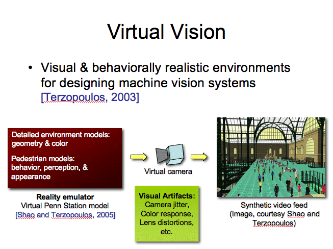
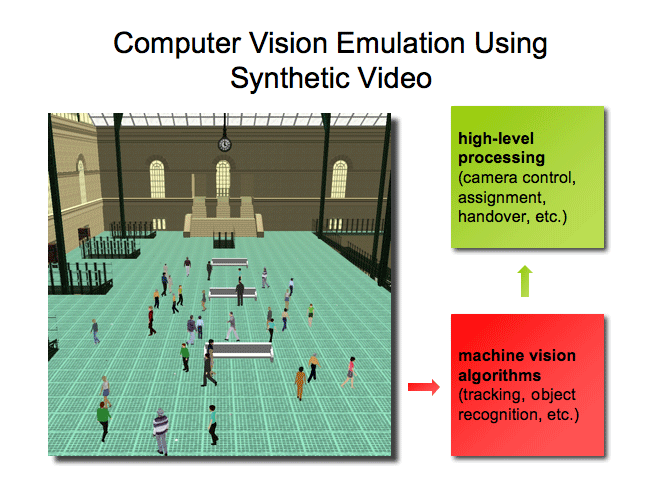

Terzopoulos [1] proposed a Virtual Vision approach to designing surveillance systems using a virtual train station environment populated by fully autonomous, life like pedestrians that perform various activities [2]. Within this environment, virtual cameras generate synthetic video feeds. The video streams emulate those generated by real surveillance cameras, and low-level image processing mimics the performance characteristics of a state-of-the-art surveillance video system.
It is an on going project and the related publications are available here.
|  |  |
Cameras decide among themselves how best to observe the pedestrian as she makes her way through the virtual Penn station. An operator selects the pedestrian to be tracked in camera 7.
We developed appearance-based pedestrian tracker that mimic the performance of trackers deployed on physical systems.
Image drive fixation and zooming routines.
PTZ Camera Stabilization while zooming and fixating
Background subtraction for passive wide-FOV cameras to identify foreground objects. We do not rely upon background subtraction for PTZ cameras. Background model is learnt over time through observation. The model is also periodically updated to account for changes in the background. Note that background subtraction is not perfect (as when using real video).
The research reported herein was made possible in part by a grant from the Defence Advanced Research Projects Agency (DARPA) of the Department of Defence. We thank Dr. Tom Strat, formerly of DARPA, for his generous support and encouragement. We also thank Wei Shao and Mauricio Plaza-Villegas for their invaluable contributions to the implementation of the Penn Station simulator.
[1] D. Terzopoulos, “Perceptive agents and systems in virtual reality,” in Proc. 10th ACM Symposium on Virtual Reality Software and Technology, (Osaka, Japan), pp.1–3, Oct. 2003.
[2] W. Shao and D.Terzopoulos, “Autonomous pedestrians,” in Proc. ACMSIGGRAPH/Eurographics Symposium on Computer Animation, (LosAngeles, CA), pp. 19–28, July 2005.